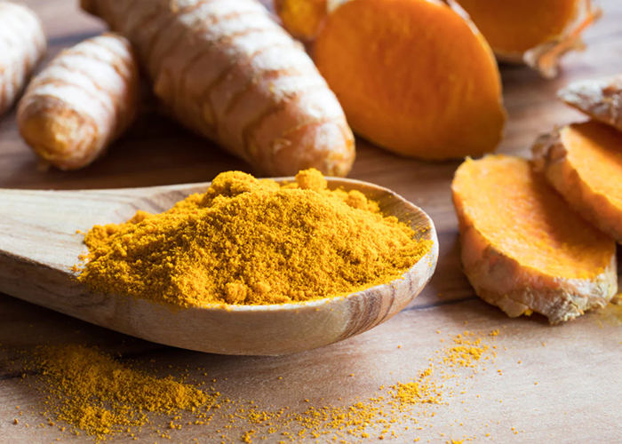
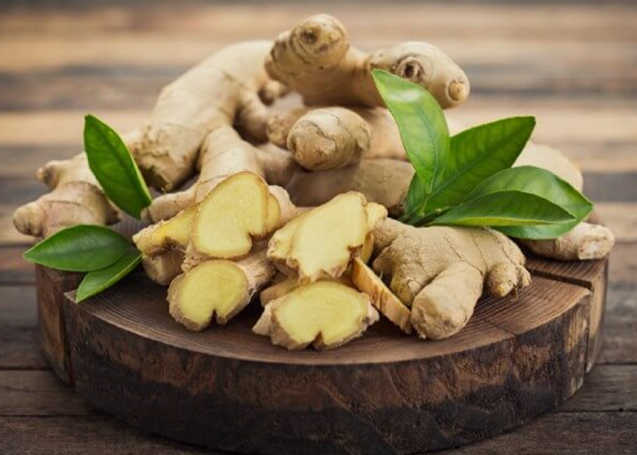
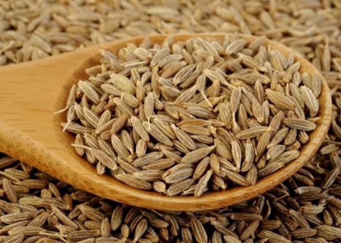
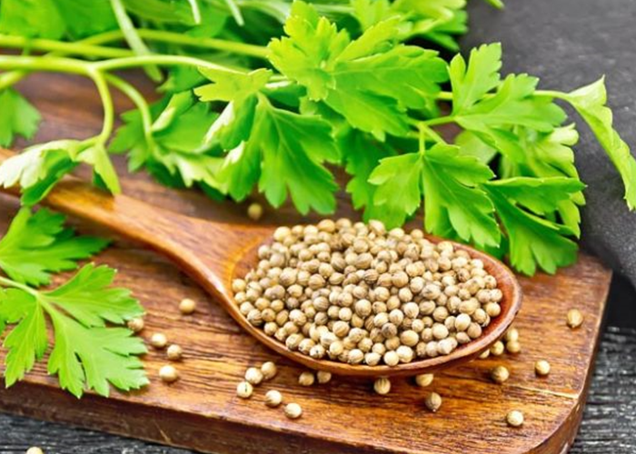
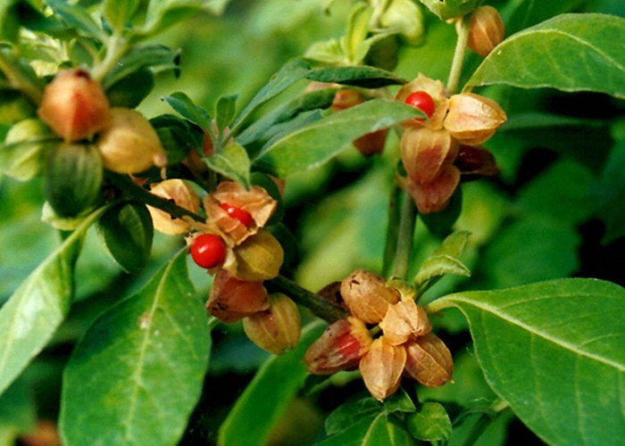

Ayurvedic
Herbs and Spices

Turmeric (Curcuma longa)
The golden-yellow spice with powerful anti-inflammatory and antioxidant properties.
Benefits include improving joint health, aiding digestion,
and potentially protecting against certain diseases.

Ginger (Zingiber officinale)
A warming spice renowned for its digestive benefits, nausea relief,
and immune-boosting properties.

Cumin (Cuminum cyminum)
An aromatic spice fundamental in many Ayurvedic dishes.
Supports digestion, helps regulate blood sugar, and has antioxidant effects.

Coriander (Coriandrum sativum)
Both the seeds and leaves of the coriander plant are used in Ayurveda.
Has a cooling effect, aids digestion, and may help manage blood sugar levels.

Ashwagandha (Withania somnifera)
A powerful adaptogenic herb prized for stress reduction,
improving sleep, and boosting energy levels.
Brahmi (Bacopa monnieri)
A traditional Ayurvedic herb used to support brain health,
improve memory, and reduce anxiety.